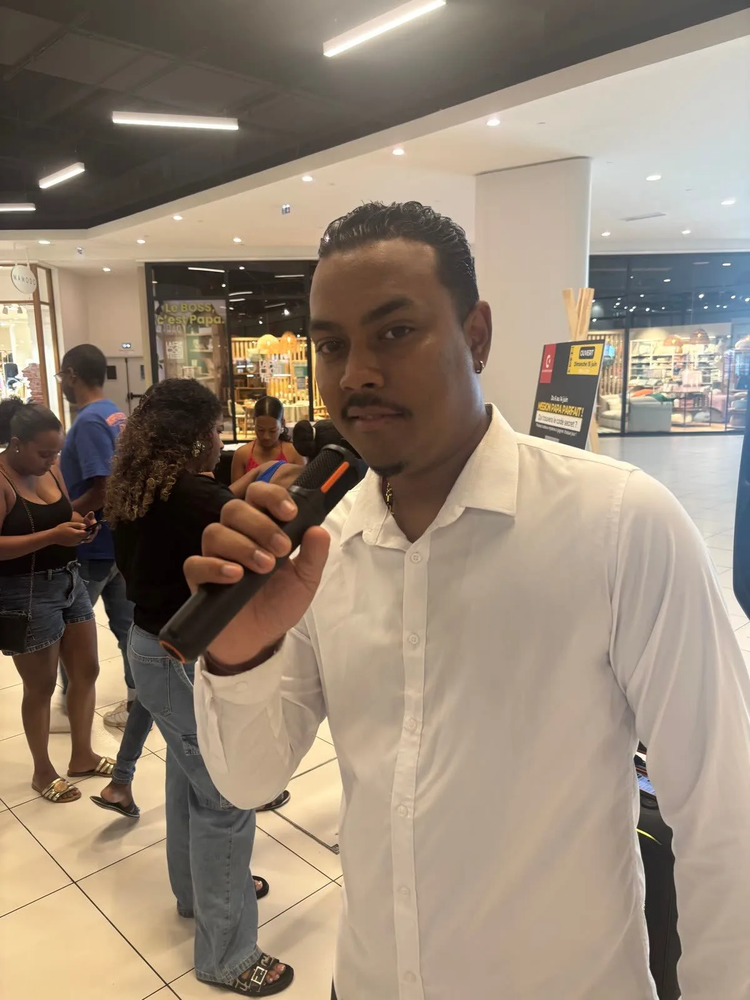

Devis en 24 h
Appelez le 06 93 81 78 82 ou écrivez à contact@pullup.re. Ou laissez 4 informations, nous rappelons :
Un afterwork d'entreprise est une petite soirée qui se joue sur l'ambiance : si les premiers arrivés trouvent déjà de la musique, un verre et quelqu'un pour les accueillir, la salle se remplit toute seule. Cette page explique les formats, le déroulé et les prix constatés. Pour une soirée plus longue, avec repas, voyez la soirée du personnel.
Pour qui, et pour quelle occasion ?
- Les RH : accueillir les nouveaux arrivants, marquer la fin d'un projet, créer du lien entre deux sites ou deux services sans mobiliser une journée entière.
- Les directeurs : remercier une équipe en fin de trimestre, recevoir des clients et partenaires dans un cadre plus détendu qu'un déjeuner.
- Les CSE : proposer une sortie régulière et peu coûteuse, ouverte à tous les salariés, avec un tirage au sort (voir les idées de tombola pour un CSE).
Quatre formats d'afterwork
Afterwork musical
DJ, sonorisation soignée, éclairage doux. Idéal pour 30 à 150 personnes. Voir la page DJ de soirée d'entreprise.
Afterwork karaoké
L'équipe chante, la hiérarchie aussi. Un animateur lance les premiers titres. Détails sur karaoke974.re.
Afterwork jeux
Blind test, quiz ou jeux par équipes : on se mélange sans y penser, utile quand les services ne se connaissent pas.
Afterwork clients
Accueil par des hôtes, musique plus discrète, présentation courte au micro puis cocktail : le ton d'une soirée de relations clients.

Le déroulé type d'un afterwork de trois heures
| Heure | Moment | Ce qui se passe |
|---|---|---|
| 17 h 30 | Accueil | Hôtes à l'entrée, boisson de bienvenue, musique d'ambiance à bas volume |
| 18 h 15 | Mot de la direction | Deux minutes au micro, pas plus : on remercie, on lance la soirée |
| 18 h 30 | Animation | Blind test, karaoké ou DJ set selon le format choisi |
| 19 h 30 | Temps fort | Tirage au sort, photobooth, remise d'un petit prix |
| 20 h 30 | Fin | Musique qui baisse, raccompagnement organisé, rangement par nos équipes |
Ce que nous coordonnons
- Le lieu : vos locaux, une terrasse, un jardin ou une salle. Pour les idées de lieux, voyez la page lieux de soirée d'entreprise.
- Le son et la lumière : adaptés à la taille du lieu et au voisinage (sonorisation de soirée).
- Le DJ ou l'animateur micro, le photobooth si vous le souhaitez.
- Le service et le traiteur, avec une vraie offre sans alcool.
Trois conseils pour réussir
- Choisissez le bon jour. Le jeudi marche le mieux, le détail est dans quel jour choisir pour une soirée d'entreprise.
- Cadrez l'alcool dès le départ : nombre de consommations, offre sans alcool, retour sécurisé. Nos règles sont dans alcool en soirée d'entreprise : retours et sécurité.
- Prévoyez une heure de fin affichée. Un afterwork qui a une fin claire est un afterwork dont on parle bien le lendemain.
Questions fréquentes
Combien de temps dure un afterwork d'entreprise ?
Entre deux et trois heures en général, par exemple de 17 h 30 à 20 h 30. Au-delà, l'afterwork devient une soirée et change de format : il faut alors prévoir un repas. Mieux vaut une salle encore pleine à la fin qu'un afterwork qui s'étire.
Quel jour choisir pour un afterwork à La Réunion ?
Le jeudi fonctionne le mieux : le lendemain reste travaillé, mais l'équipe n'est pas encore dans la course de fin de semaine. Évitez le vendredi soir où beaucoup rentrent tôt, et prévoyez les trajets en voiture avant de décider de l'heure de fin.
Peut-on proposer un afterwork sans alcool ?
Oui, et c'est même recommandé d'en faire une option visible : cocktails sans alcool, jus pays, softs. Nous cadrons le service et l'ambiance pour que chacun trouve sa place, avec des horaires clairs et un retour sécurisé pour les conducteurs.
Quels prix pour la partie musique et animation ?
Les postes constatés dans notre baromètre 2026 : DJ 300 € HT, sonorisation et lumière de 940 à 1 450 € HT, maître de cérémonie 450 € HT, photobooth 550 € HT (TVA 8,5 % en sus). Le traiteur et le lieu sont chiffrés sur devis, sous 24 h.
Pouvez-vous organiser un afterwork dans nos locaux ?
Oui, si l'espace le permet (hall, terrasse, cour, cafétéria). Nous venons vérifier le lieu, adaptons le son au voisinage et installons tout en dehors des heures de travail pour ne pas gêner votre équipe.
Date envisagée, nombre de personnes, lieu : trois informations suffisent pour recevoir une proposition détaillée sous 24 h.
📞 06 93 81 78 82 Demander un devis